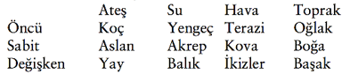

4. Bölüm: Zodyakın Girdisi Çıktısı
Dört element
Deniz ve kara gezginleri pusulanın dört yönü ile yollarını bulurlar. Kozmik gezginler dört elementi kullanırlar:
Ateş, eylem ve yaratıcılığı simgeler, Koç, Aslan ve Yay burçlarını ateşler.
Su, duyguları simgeler, Yengeç, Akrep ve Balık burçlarının temelini oluşturur.
Hava, zekâyı simgeler, Terazi, Kova ve İkizler burçları için hâkim güçtür.
Toprak, madde ve pratikliği simgeler, Oğlak, Boğa ve Başak burçlarının niteliğidir.
Antik simya bilgeliğine göre bu dört element tüm yaşamın temelidir. Şu anda bu kitabı elinizde tutarken dört elementi bünyenizde topluyorsunuz. Kitabın fiziksel tarafı (kapağı, kâğıdı, mürekkebi) toprak elementine aittir, zekânıza hitap eden sözcükler ve bilgi havayı çağrıştırır, kitabı tutma ve okuma eylemi ateşin kontrolü altındadır, kitaptaki bilginin tetik-lediği duygular ise su elementinden gelmektedir. Sevgilinizi öptüğünüz zaman da simya yaratırsınız. Dudakların fiziksel dokunmasını (toprak) sağlar, duygusal akımı (su), beyninizden geçen düşünceleri (hava), tutkuyu ve cazibeyi (ateş) yaratırsınız.
Simyacılar, kurşun madeni ile simgelenen kusurlu, bayağı ve sıradan durumları, kalbin ve altın madeninin simgelediği sevginin kusursuzluğuna dönüştürmek için dört elementi dengelemeye çalışırlar. Simyacının veya astrologun laboratuvarı kendi bedenidir.
Dört elementi iki grupta toplayabiliriz: Kadınsı (su ve toprak), erkeksi (ateş ve hava). Bunlar, kadınsı (besleyici, bakıcı ve uygulayıcı) ve erkeksi (etkin ve konuşkan) iki ana insan arketipini yansıtmaktadır. Bu bölünme bize, dengeli ve altın bir yaşam oluşturmak için, cinsiyetimiz söz konusu olmadan, geleneksel kadınsı ve erkeksi özelliklerimizi onurlandırmak ve artırmak durumunda olduğumuzu gösterir.
Üç Modalite (Dörtlüler)
Bu dört element, Kabala dahil tüm Batı gizemlerinin belkemiğini oluşturur. O zaman neden on iki burca ihtiyacımız var?
Dört elementin her biri üç değişik şekilde ifade edilebilir. Bu değişik ifade şekillerine üç modalite (dörtlüler) diyoruz. Astroloji, dört elementin karşılığı olan dört mevsimi izler ve bu üç-aylık mevsimin her birinin bir başlangıcı, ortası, bir de sonu vardır. Hey ay kendini doğada değişik bir şekilde gösterir. Kışın başlangıcı, örneğin, ortası kadar soğuk değildir. Yazın ortası genelde sonundan biraz daha sıcaktır. Üç moda-lite, mevsimlerin bu üç kısmını simgeler:
Öncü modalite, mevsimin başıdır ve başlatma gücüdür.
Sabit modalite, mevsimin ortasıdır ve sürdürme gücünü simgeler.
Değişken modalite, mevsimin sonunu ve değişimin gücünü simgeler.
Elementler ve Modaliteler
(Üçlüler ve Dörtlüler)

Dört elementin her birinin öncü, sabit ve değişken ifadeleri vardır. Dört element çarpı üç modalite, on iki ayrı enerji alanı ve dolayısıyla on iki burç demektir. Koç, Aslan ve Yay, örneğin, ateş burçları olmalarına rağmen her biri değişik bir arketipe işaret eder. Koç savaşçıyı veya askeri, Aslan savaşçı tarafından korunan kralı, Yay ise savaşçının ve kralın ahlâkını destekleyen peygamberi, büyücüyü veya danışmanı simgeler. Tevrat’ta kızıl saçlı Koç savaşçı David’e, Yayın simgelediği peygamberimsi bilge Samuel tarafından kutsal yağ sürülür. David, eski kral Saul’dan krallığı aldı ve bir hanedan başlattı. Öncü ateş burcu Koç süreci başlatır. Değişken burç Yay, bir mevsimden diğerine, bu durumda bir hanedandan (Saul) diğerine (David) geçişte haberci ve birleştiricidir, değişim unsurudur. Sabit ateş burcu Aslan, Koçtan alevi teslim alır ve onu sürdürmek için çabalar. Bu durumda, kral-olarak-doğmuş Aslan burcunu simgeleyen Kral Solomon, babasından krallığı devraldı ve bin kadınlık haremi ile barış içinde hükümdarlığını sürdürdü. Sonuç olarak Aslan aslandır...Öncü burçlar mevsimleri başlatır: Koç ilkbaharı, Yengeç yazı, Terazi sonbaharı ve Oğlak kışı. Bu öncü burçlar bizi ileri iter, elimizden geleni yapmamızı bekler. Onlar en iyi, en sağlıklı kaslarımızı ortaya çıkarmak isteyen kişisel çalıştırıcı gibidirler.
Mevsimin ortasındaki sabit burçlar, mevsimsel eğilimi tam anlamıyla sergilerler. Bahar çiçekleri açarken Boğa ortaya çıkar; Aslan en sıcak günleri görür. Ölümün burcu olan Akrep, yaprak dökümünde hükmeder. Kova, buz ve soğuk toprağı del-diğinde gözükür.
Kabala bu dört sabit burçtan Hayot veya “Yaratıklar” diye söz eder. Bunlar, ilahi güçle bir olmak üzere yükselmek için kullanılan aracın (meditasyonun) gizemsel Kabalistik kodu olan “iki tekerlikli savaş arabası”na bağlanmışlardır. Bu yaratıklar ilkönce Ezekiel’in deneyüstü (transandantal) görüşünde ortaya çıkar (Exekiel 11:10): “Yüzlerinin benzerliği açısından dörtlü, bir insanın yüzüne [Kova burcu] ve bir aslanın yüzüne [Aslan burcu] sahipti...dörtlü, bir öküzün yüzüne [Boğa burcu]...dörtlü, bir atmacanın yüzüne [Akrep burcu] sahipti.” Daha sonra, Hristiyan gizemciler dört yaratığı, dört havari Mark, Matthew, Luke ve John ile bağdaştırdılar. Tüm bunların önemi ne? Sabit burçlar kendilerini ciddiye alma eğilimindedirler ve bizim de onları ciddiye almamızı isterler. Bu havarilere atfedilen anlatımların daha sonra Yeni Ahit’te derlenmesine ve bir milyara yakın insan tarafından Tanrının sözü olarak kabul edilmesine şaşırmamalı. Dört yaratığın Kabalanın ezoterik gizemlerinin çoğunu desteklemesine ve dört havarinin Hristiyanlığın temelini oluşturmasına benzer şekilde, sabit burçlar da zodyakın dayanağıdır.
Bu arada değişken burçlar, film editörlerinin sahneler arası uyuşmayan geçişlerden kaçınmaya çabalamaları gibi bir mevsimden diğerine geçişi kolaylaştırırlar. ikizler ilkbahar ve yazın arasında bir köprüdür, Başak yazı sonbahara taşır, Yay sonbahardan kışa ok atar ve Balık kışın ilkbahara çözülmesini sağlar. Çeşitliliğin ve evrimdeki mutasyonların, çok değişik türlerin yaşamasına ve dolayısıyla dinamik ve işleyen bir biyosfere olanak tanıması gibi değişken burçlar da yeryüzünün değişen fiziksel halleri içinde yaşamın sürmesini kolaylaştırır. Değişkenler, uyma yeteneğimizi sağlama alır.
Hinduizmde bu üç modalite, veya ilke, ilahi Üçlüyü oluşturur: Brahma, yaratma ve başlatma tanrısı; Vişnu, sürdürme tanrısı; Şiva, yok edici tanrı. Greko-Romen kültür, bu temel üçlüyü Kaderin üç tanrıçasına yansıttı; birincisi yaşam ipliğini sunar, ikincisi ipliği ölçer ve üçüncüsü ipliği keser. Kabalistik Yaşam Ağacı benzer şekilde üç dayanak içerir: Sağdaki dayanak genişler, soldaki büzülür, ortadaki dengeler ve taşır.
Burçların Öz Gücü
Bir astrolojik burcun elementinin özelliğini, modalitesi-nin özelliği ile birleştirerek o burç hakkında kolayca çok şey öğrenebilirsiniz. Bu formül, belirli bir arketipin kök gücünü saptamanıza yardım edecektir; böylece çevrenizdeki insanları ve takvim yılının belirli zamanlarında olan olayları daha iyi anlayabileceksiniz.
Kök güç = Modalite + Element
Koç: Öncü ateş. Kök gücünüz, eylem (ateş) başlatma (öncü) yeteneğinizden kaynaklanır. Hedeflerinizi başlatarak, iterek ve ilerleterek başarıya gidebilirsiniz. Kendinize ve başkalarına liderlik yapabilmek (öncü) için kendinizi baskıdan kurtarmanız (ateş) gerekmektedir.
Boğa: Sabit topraksınız. Kök gücünüzün temeli, kalıcılık/ stabilite (toprak), sabır ve uzun süre çabayı sürdürmedir (sabit). Yeteneklerinizi, değerlerinizi ve mali durumunuzu ilgilendiren konularda beş duyunuza bağlanmanız ve ayaklarınızın yere basması (toprak ve sabit) gerekmektedir.
İkizler: Değişken hava. Kök gücünüz kendini, iletişim tarzınızı (hava) dalgalanan durumlara uyarlamanızda (değişken) gösteriyor. Doğaçlama yaptığınız (değişken) ve zekânızı kullandığınız (hava) sürece arzularınızı elde edeceksiniz.
Yengeç: Öncü su. Kök gücünüz, duygusal süreci (su) başlatmakla (öncü) gelir. Siz yaşam veriyorsunuz (öncü). Gizil gücünüzü açığa çıkarmak için, insanları veya projeleri besleyecek (su) durumlara olanak tanımalısınız (öncü).
Aslan: Sabit ateş. Kök gücünüz, eylemde (ateş) ısrar etmenizden (sabit) kaynaklanır. iyilikseverlik amacı içinde değişmez ve odaklanmış (sabit) bir yaratıcı güç (ateş) sahibi olursanız çevrenizde ünlü ve saygın olursunuz.
Başak: Değişken toprak. Kök gücünüz, çevrenizdeki yaşamı daha verimli ve etkili (toprak) yapmak için durumları düzenleme, düzeltme ve uyarlama (değişken) yeteneğinizden kaynaklanmaktadır.
Terazi: Öncü hava. Kök gücünüz, iletişimi (hava) başlatmakta (öncü) yatar. Konuşmaları başlattıkça (öncü) ve ilişki ustalığınızı (hava) geliştirdikçe, bu yeteneğiniz ile ilişkilerde ve adalette uzman olursunuz.
Akrep: Sabit su. Kök gücünüz, ilişkilerinizde yoğun bir şekilde duygusal ve samimi (su) kalma (sabit) yeteneğinizden kaynaklanmaktadır. Kendinizi ve başkalarını açığa çıkarabildiğiniz, iyileştirebildiğiniz ve iyileştirilmeye izin verdiğiniz, başkalarının duygusal (su) güdülerinin temel (sabit) özüne mümkün olduğunca dalabildiğiniz sürece başarılı olabilirsiniz.
Yay: Değişken ateş. Felsefe, ahlaki kurallar ve inanç sistemlerini (ateş), özellikle içsel iyimserlik duyunuzunu da işin içine sokarak yayma (değişken) yeteneğinizden kök gücünüz ortaya çıkar. insanlığa olan göreviniz öğretmek, öğrenmek ve başkalarının olumsuz tutum ve hareketlerini (ateş) uyarlamak (değişken) ile ilgilidir.
Oğlak: Öncü toprak. Kök gücünüz yeteneklerin, değerlerin ve kaynakların (toprak) pratik uygulamasının başlatılmasından (öncü) gelir. Zodyak çemberinin iş planına sahipsiniz. Belirli bir hedef (öncü) saptadığınız ve sonra sabır ve disiplin (toprak) uyguladığınız zaman başarı gelecektir.
Kova: Sabit hava. Kök gücünüz, çevreniz ve arkadaşlarınız (hava) ile kalıcı ve tutarlı bir (sabit) ilişki kurmanızdan kaynaklanır. Büyük bir grup insanın (hava) dayanağısınız (sabit). Başarınız, yenilikçi, komik ve geleceğe dönük, çağ ötesi fikirlerde (hava) yatar.
Balık: Değişken su. Kök gücünüz, hayal gücü, gizemcilik ve şefkatle (su) yaşamı iyileştirmekten ve değişim yaratmaktan (değişken) kaynaklanır. Başkalarının duygusal durumlarına (su) duyarlılığınız ile başarıyı yakalayabilirsiniz. Genelde düşler ve düşlemler (su) yolu ile yeğlediğiniz yaşamı ortaya çıkarırsınız.
Astrolojinin Atlıkarıncası
İnsanlığın en büyük buluşunun tekerlek olduğu önermesini biliyoruz. Ben bu varsayımı her zaman sorgulamışımdır. Sanırım hangi tekerlekten söz ettiğimize bağlı bu. Eğer kağnıdan, el arabasından söz ediyorsanız Amerika kıtasındaki Maya, inka gibi birçok kültürün bunlarsız yapabildiklerini ileri sürebilirim. Usta mimar ve gökbilimci olan bu insanlar, bu özel marifet olmadan da karmaşık ve incelikli medeniyetler yaratmışlardır. Öte yandan bu kültürler, felsefi veya sembolik tekerleğin öneminin farkındaydılar. Uzay ve zamanı harita-lamak için ileri gökbilim ve matematik kullandılar (Maya ve Aztek takvimi, dairesel bir taş levhaya yazılmıştır) ve gökbilim ile matematiğin karmaşıklığını incelediler (Mayalar sıfır sayısını buldular).
Spiritüellikte tekerlek veya çember tamamlanmışlığı, kusursuzluğu ve eşitliği (kralın bile başında oturamadığı Kral Arthur’un Yuvarlak Masası gibi) simgeler. Aynı zamanda sonsuza dek yinelenen yeniden doğma (reinkarnasyon) kavramına- yaşamı izleyen ölüm, onu izleyen yaşam- işaret eder. Kabalada Yaşam Ağacı, on çember veya küreden oluşmuştur. Hindu geleneğinin temel yapı taşı olan Sanskrit sözcüğü chakra, “tekerlek” anlamına gelir. islamın gizemsel (mistik) geleneği Sufilikte dervişler, Tanrıya tapınırken yaşam çemberini taklit edercesine dönerler. Astroloji, yeryüzünde yaşamın simgesi olarak zodyak çemberini kullanır ve evet-hayır, iyi-kötü, yanlış-doğru gibi keskin uçurumlar yerine dereceleri vurgular.
Astroloji ve Kabala ile çalışırken astrolojik döngünün çevresinde sürekli tur atmamıza rağmen aynı noktaya değil, daha üstün ve bilinçli bir yere gideriz. Bir bebeğin, her yıl zodyak çemberinde aynı yere gelmesine rağmen giderek büyüdüğünü ve bir şeyler öğrendiğini düşünün. Çember (veya tekerlek) ile çalıştığımızda mevsimlerin yineleyici döngülerinden kurtuluruz. iyi anlamda mutasyona uğrarız ve her gün yaşadığımız derslerle ve Tikkun (düzeltme) yolu ile yükseliriz. Bu çalışma ile çember, Kabalistik Yaşam Ağacının en yüce küresi Tacın kutsal simgesi olan sarmala dönüşür (Bakın, 5. Bölüm). Sarmal temelde üç boyutlu bir çemberdir. Başladığımız noktaya her dönüşümüzde kendimizi biraz daha yüksek bir yerde buluruz. Öğrendiğimiz her dersle, özümsediğimiz her astrolojik burçla yükseklere çıkarız ve tekdüze yuvarlağı, göklere uzanan bir büyülü sarmala dönüştürürüz. Bu Kabalanın temel totemi olan ağacın halkalarına benzer. Ağaç her yıl olgunlaştıkça gövdesine bir halka daha ekler. Her yıl bu halkalar büyür, bu da bizim için, elde edilen deneyimlerin, öğrenilen derslerin ve gelişen karmamızın tırmanan canlılığının sembolik onaylamasıdır.